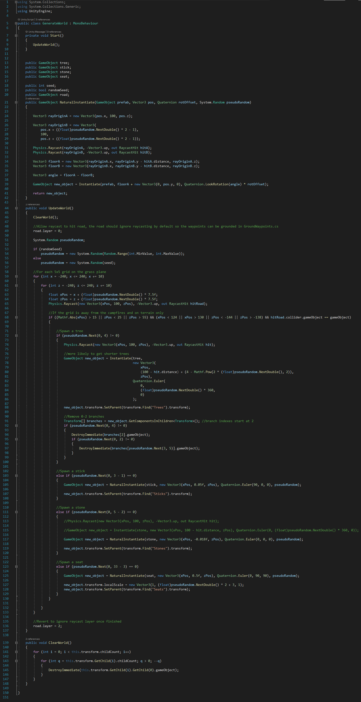

Terrain Generation
To procedurally generate the hilly terrain, I used code written by Sebastian Lague.
I copied relevant code from episodes 1-5, so I recommend watching them to understand how the algorithm works :)
I copied the code into the files GenerateMesh.cs and Noise.cs and added a collision mesh creator for obvious reasons.
Generate World
Inspired by Sebastian's procedural landmass generation, I created a procedural forest generator - in retrospect that would've been a much more apt name for the script... (v _ v)
The amount of if statements I used writing it hurt my optimisation hunting eyes, but I think they were at least neccessary to make the code understandable.
In short, the code generates the trees, sticks, stones and log seats at spaced yet pseudo-random positions throughout the forest. Trees are the most probable to be generated, logs
the least. The trees are at pseudo-random heights, with a pseudo-random number of branches (2-4).
They are pseudo-randomly generated so that the same forest is generated for a given seed; however, ultimately I decided to generate a random seed for each different game, because
each player's life is different, so their forest is different and thus their route through it; yet the trodden path remains the same for everyone. It also makes the forest harder
to navigate.
Surprisingly, the most technical part of this entire project was getting the generated sticks, stones and seats to align themselves with the terrain beneath them. I settle on a solution
which allowed me to calculate the graident between the collision points on the terrain from two raycasts, which the object would then be aligned to: lines 21-42 below.
Click the code below to download the C# file:

<
Contents:
Click to jump to chapter: